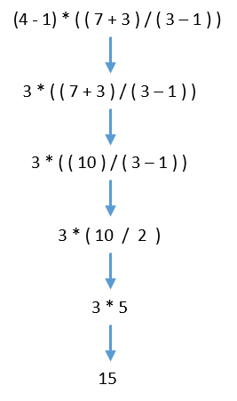
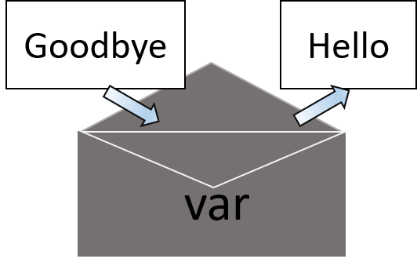

Expressions¶
The Python programming language has a wide range of syntactical constructions, standard library functions, and interactive development environment features. Fortunately, you can ignore most of that; you just need to learn enough to write some handy little programs.
You will, however, have to learn some basic programming concepts before you can do anything. Like any other beginner-in-training, you might think these concepts seem arcane and tedious, but with some knowledge and practice, you’ll be able to command your computer to perform incredible feats.
This chapter has a few examples that encourage you to type into the cells, which lets you execute Python instructions one at a time and shows you the results instantly. Using the Jupyter Notebooks is great for learning what basic Python instructions do, so give it a try as you follow along. You’ll remember the things you DO much better than the things you only read.
2+2
4
In Python, 2 + 2 is called an expression, which is the most basic kind of programming instruction in the language. Expressions consist of values (such as 2) and operators (such as +), and they can always evaluate (that is, reduce) down to a single value. That means you can use expressions anywhere in Python code that you could also use a value.
The above example, 2 + 2 is evaluated down to a single value, 4. A single value with no operators is also considered an expression, though it evaluates only to itself, as shown here:
2
2
There are plenty of other operators you can use in Python expressions, too. For example, below Table lists all the math operators in Python.
Operator |
Name |
Description |
Example |
Evaluates to… |
|---|---|---|---|---|
|
Addition |
Sum of |
|
|
|
Subtraction |
Difference of |
|
|
|
Multiplication |
Product of |
|
|
|
True division |
Quotient of |
|
|
|
Floor division |
Quotient of |
|
|
|
Modulus |
Integer remainder after division of |
|
|
|
Exponentiation |
|
|
|
The order of operations (also called precedence) of Python math operators is similar to that of mathematics. The ** operator is evaluated first; the *, /, //, and % operators are evaluated next, from left to right; and the + and - operators are evaluated last (also from left to right). You can use parentheses () to override the usual precedence if you need to. Let’s see some example:
1 + 2 * 3
7
(1 + 2) * 3
9
123456789 * 456789
56393703190521
2 ** 10
1024
22 / 7
3.142857142857143
22 // 7
3
22 % 7
1
2 + 2
4
(4 - 1) * ((7 + 3) / (3 - 1))
15.0
In each case, you as the programmer must enter the expression, but Python does the hard part of evaluating it down to a single value. Python will keep evaluating parts of the expression until it becomes a single value, as shown in figure below

These rules for putting operators and values together to form expressions are a fundamental part of Python as a programming language, just like the grammar rules that help us communicate. Here’s an example:
This is a grammatically correct English sentence.
This grammatically is sentence not English correct a.
The second line is difficult to parse because it doesn’t follow the rules of English. Similarly, if you type in a bad Python instruction, Python won’t be able to understand it and will display a SyntaxError error message, as shown here:
5 +
File "<ipython-input-12-4f4744a157be>", line 1
5 +
^
SyntaxError: invalid syntax
40 + 5 + * 2
File "<ipython-input-13-ed878fdb87ac>", line 1
40 + 5 + * 2
^
SyntaxError: invalid syntax
You can always test to see whether an instruction works by typing it into the cell. Don’t worry about breaking the computer: The worst thing that could happen is that Python responds with an error message. Professional software developers get error messages while writing code all the time.
Errors are Okay!
Programs will crash if they contain code the computer can’t understand, which will cause Python to show an error message. An error message won’t break your computer, though, so don’t be afraid to make mistakes. A crash just means the program stopped running unexpectedly. If you want to know more about an error message, you can search for the exact message text online to find out more about that specific error.
Data Types¶
Remember that expressions are just values combined with operators, and they always evaluate down to a single value. A data type is a category for values, and every value belongs to exactly one data type. Data Types are very important because they tell you what operations can be performed on the operator (more on this later). The most common data types in Python are listed in Table below.
Data Type |
Examples |
Defitions |
|---|---|---|
Integers |
|
The integer (or |
Float |
|
Numbers with a decimal point, such as 3.14, are called floating-point numbers (or |
Strings |
|
A string in Python is a sequence of characters which are always surrounded in single/double quote (‘) or (“) |
Note
Note that even though the value 42 is an integer, the value 42.0 would be a floating-point number.
Integers¶
Integers are purely whole numbers including negative values as well.
x = 10
y = -5
print(x-y)
15
Float¶
The floating-point type can store fractional numbers. They can be defined in standard decimal notation, as follows:
x = 33.9
y = 15
print(x*y)
508.5
Strings¶
Python programs can also have text values called strings, or strs. Always surround your string in single quote (‘) or double quote(“) characters (as in ‘Hello’ or “Goodbye cruel world!”) so Python knows where the string begins and ends. You can even have a string with no characters in it, '', called a blank string.
If you ever see the error message SyntaxError: EOL while scanning string literal, you probably forgot the final single quote character at the end of the string, such as in this example:
'Hello world!
File "<ipython-input-17-b0711bd32433>", line 1
'Hello world!
^
SyntaxError: EOL while scanning string literal
String Concatenation¶
The meaning of an operator may change based on the data types of the values next to it. For example, + is the addition operator when it operates on two integers or floating-point values. However, when + is used on two string values, it joins the strings as the string concatenation operator. Try out the following example.
'ai' + 'adventures'
'aiadventures'
The expression evaluates down to a single, new string value that combines the text of the two strings. However, if you try to use the + operator on a string and an integer value, Python will not know how to handle this, and it will display an error message.
'ai' + 42
---------------------------------------------------------------------------
TypeError Traceback (most recent call last)
<ipython-input-19-55077b22f808> in <module>
----> 1 'ai' + 42
TypeError: must be str, not int
The error message says that python can’t do the operation because python does not knows how to add a str and an int. User has to convert the int to str data type before he/she can add 42 to ‘ai’.
String Replication¶
The * operator is used for multiplication when it operates on two integer or floating-point values. But when the * operator is used on one string value and one integer value, it becomes the string replication operator. Enter a string multiplied by a number to see this in action.
'ai' * 5
'aiaiaiaiai'
The expression evaluates down to a single string value that repeats the original a number of times equal to the integer value. String replication is a useful trick, but it’s not used as often as string concatenation.
The * operator can be used with only two numeric values (for multiplication) or one string value and one integer value (for string replication). Otherwise, Python will just display an error message.
For example …
'ai' * 'adventures'
---------------------------------------------------------------------------
TypeError Traceback (most recent call last)
<ipython-input-21-d68f526a72b9> in <module>
----> 1 'ai' * 'adventures'
TypeError: can't multiply sequence by non-int of type 'str'
'ai' * 5.0
---------------------------------------------------------------------------
TypeError Traceback (most recent call last)
<ipython-input-22-64f1bf4b86f5> in <module>
----> 1 'ai' * 5.0
TypeError: can't multiply sequence by non-int of type 'float'
It makes sense that Python wouldn’t understand these expressions: You can’t multiply two words, and it’s hard to replicate an arbitrary string a fractional number of times.
Storing Values in Variables¶
A variable is like a envelope in the computer’s memory where you can store a single value. If you want to use the result of an evaluated expression later in your program, you can save it inside a variable.
Assignment Statements¶
You’ll store values in variables with an assignment statement. An assignment statement consists of a variable name, an equal sign (called the assignment operator), and the value to be stored. If you enter the assignment statement var = 42, then a variable named var will have the integer value 42 stored in it.
Think of a variable as a labeled envelope that a value is placed in, as in the figure.

In python, a variable is initialized (or created) the first time a value is stored in it.
var = 40
var
40
Note
Here we are not using print() function but still it displays the output. This is only possible in Jupyter Notebook, every last line of code cell always displays the output of the variable or operation. If you want to see the output intermediately then use print() function.
You can use variables which are already initialized in expressions with other variables.
balls = 2
print(var + balls)
var + balls + var
42
82
When a variable is assigned a new value, the old value is forgotten, which is why var evaluated to 42 instead of 40 at the end of the example. This is called overwriting the variable. Try the following code into your Jupyter Notebook’s cell to overwriting a string:
var = var + 2
var
42
var = 'Hello'
var
'Hello'
var = 'Goodbye'
var
'Goodbye'
The var variable in this example stores ‘Hello’ until you replace it with ‘Goodbye’.

Variable Names¶
Table below has examples of legal variable names. You can name a variable anything as long as it obeys the following three rules:
It can be only one word.
It can use only letters, numbers, and the underscore (_) character.
It can’t begin with a number.
Valid variable names |
Invalid variable names |
|---|---|
|
|
|
|
|
|
|
|
|
|
|
|
Another important thing to note, variable names are case-sensitive, meaning that var, VAR, Var, and vAr are four different variables. It is a Python convention to start your variables with a lowercase letter.
A good variable name describes the data it contains. Imagine that you moved to a new house and labeled all of your moving boxes as stuff. You’d never find anything! The variable names var, balls, and pencils are used as generic names for the examples, but in your programs, a descriptive name will help make your code more readable.
Your first program¶
Lets write our first program. This is a pretty simple program. It will say hello and then ask the user to enter his/her name & age.
You should write the following code in your jupyter notebook and try running it.
Note: Don’t worry a lot about understanding the complete code. We will be discussing it in detail.
# This program says hello and asks for my name.
print('Hello world!')
print('What is your name?') # ask for their name
myName = input()
print('It is good to meet you, ' + myName)
print('The length of your name is:')
print(len(myName))
print('What is your age?') # ask for their age
myAge = input()
print('You will be ' + str(int(myAge) + 1) + ' in a year.')
Hello world!
What is your name?
Ram
It is good to meet you, Ram
The length of your name is:
3
What is your age?
19
You will be 20 in a year.
We hope, you have tried running the code. Let’s take a quick look at what each line of code does.
Comments¶
The following line is called a comment.
# This program says hello and asks for my name.
Python ignores comments, and you can use them to write notes or remind yourself what the code is trying to do. Any text for the rest of the line following a hash mark (#) is part of a comment. This means, for example, that you can have stand-alone comments like the one just shown, as well as inline comments that follow a statement. For example:
print('What is your name?') # ask for their name
Sometimes, programmers will put a “#” in front of a line of code to temporarily remove it while testing a program. This is called commenting out code, and it can be useful when you’re trying to figure out why a program doesn’t work. You can remove the “#” later when you are ready to put the line back in.
print() function¶
The print() function displays the string value inside the parentheses on the screen.
print('Hello world!')
print('What is your name?') # ask for their name
The line print('Hello world!') means “Print out the text in the string ‘Hello world!’.” When Python executes this line, you say that Python is calling the print() function and the string value is being passed to the function. A value that is passed to a function call is an argument. Notice that the quotes are not printed to the screen. They just mark where the string begins and ends; they are not part of the string value.
Note
You can also use this function to put a blank line on the screen; just call print() with nothing in between the parentheses.
input() function¶
The input() function waits for the user to type some text on the keyboard and press ENTER.
myName = input()
This function call evaluates to a string equal to the user’s text, and the previous line of code assigns the myName variable to this string value.
You can think of the input() function call as an expression that evaluates to whatever string the user typed in. If the user entered ‘Ram’, then the expression would evaluate to myName = 'Ram'.
Printing the user’s name¶
The following call to print() actually contains the expression 'It is good to meet you, ' + myName between the parentheses.
print('It is good to meet you, ' + myName)
Remember that expressions can always evaluate to a single value. If ‘Ram’ is the value stored in myName on the previous line, then this expression evaluates to 'It is good to meet you, Ram'. This single string value is then passed to print(), which prints it on the screen.
len() function¶
You can pass the len() function a string value (or a variable containing a string), and the function evaluates to the integer value of the number of characters in that string.
print('The length of your name is:')
print(len(myName))
len('hello')
5
len('I am having a great time.')
25
len('')
0
Just like those examples, len(myName) evaluates to an integer. It is then passed to print() to be displayed on the screen. Notice that print() allows you to pass it either integer values or string values. But notice the error that shows up when you type the following into the cell:
print('I am ' + 24 + ' years old.')
---------------------------------------------------------------------------
TypeError Traceback (most recent call last)
<ipython-input-38-1b4f9ed4a6a3> in <module>
----> 1 print('I am ' + 24 + ' years old.')
TypeError: must be str, not int
The print() function isn’t causing that error, but rather it’s the expression you tried to pass to print(). You get the same error message if you type the expression into the cell on its own.
'I am ' + 24 + ' years old.'
---------------------------------------------------------------------------
TypeError Traceback (most recent call last)
<ipython-input-39-612b7dce6d2c> in <module>
----> 1 'I am ' + 24 + ' years old.'
TypeError: must be str, not int
Python gives an error because you can use the + operator only to add two integers together or concatenate two strings. You can’t add an integer to a string because this is ungrammatical in Python. You can fix this by using a string version of the integer instead, as explained in the next section.
str() function¶
If you want to concatenate an integer such as 24 with a string to pass to print(), you’ll need to get the value '24', which is the string form of 24. The str() function can be passed an integer value and will evaluate to a string value version of it, as follows:
str(24)
'24'
print('I am ' + str(24) + ' years old.')
I am 24 years old.
Because str(24) evaluates to ‘24’, the expression 'I am ' + str(24) + ' years old.' evaluates to 'I am ' + '24' + ' years old.', which in turn evaluates to 'I am 24 years old.'. This is the value that is passed to the print() function.
The str() function is handy when you have an integer or float that you want to concatenate to a string.
Note
The input() function always returns a string, even if the user enters a number.
Enter user_value = input() into the cell and enter 101 when it waits for your text.
user_value = input()
101
user_value
'101'
int() function¶
The value stored inside user_value isn’t the integer 101 but the string '101'. If you want to do math using the value in user_value, use the int() function to get the integer form of user_value and then store this as the new value in user_value.
user_value = int(user_value)
user_value
101
Now you should be able to treat the user_value variable as an integer instead of a string.
user_value *10/5
202.0
Note
If you pass a value to int() that it cannot evaluate as an integer, Python will display an error message.
int('99.99')
---------------------------------------------------------------------------
ValueError Traceback (most recent call last)
<ipython-input-47-7e09e10be494> in <module>
----> 1 int('99.99')
ValueError: invalid literal for int() with base 10: '99.99'
int('twelve')
---------------------------------------------------------------------------
ValueError Traceback (most recent call last)
<ipython-input-48-bcdccb17a8a6> in <module>
----> 1 int('twelve')
ValueError: invalid literal for int() with base 10: 'twelve'
float() function¶
Float values are those which contains decimal points. Let’s take the another example of my_value containing string'84' and you want it in float type, then use float() to get in floating point number and store in another variable.
my_value = input()
84
my_value = float(my_value)
my_value
84.0
In your program, you used the int() and str() functions in the last three lines to get a value of the appropriate data type for the code.
print('What is your age?') # ask for their age
myAge = input()
print('You will be ' + str(int(myAge) + 1) + ' in a year.')
The myAge variable contains the value returned from input(). Because the input() function always returns a string (even if the user typed in a number), you can use the int(myAge) code to return an integer value of the string in myAge. This integer value is then added to 1 in the expression int(myAge) + 1.
The result of this addition is passed to the str() function: str(int(myAge) + 1). The string value returned is then concatenated with the strings 'You will be ' and ' in a year.' to evaluate to one large string value. This large string is finally passed to print() to be displayed on the screen.
Let’s say the user enters the string '4' for myAge. The string '4' is converted to an integer, so you can add one to it. The result is 5. The str() function converts the result back to a string, so you can concatenate it with the second string, 'in a year.', to create the final message. These evaluation steps would look something like this:

Text and Number Equivalence¶
Although the string value of a number is considered a completely different value from the integer or floating-point version, an integer can be equal to a floating point.
42 == '42'
False
42 == 42.0
True
42.0 == 0042.000
True
Python makes this distinction because strings are text, while integers and floats are both numbers.
That’s it in this chapter. You have learnt Python Basics, Data types & it’s operations. Let’s move on to conclusion it will test your knowledge of this chapter.
Conclusion¶
The Questionaire is given in order to revise all the concepts or topics you have learnt in this chapter.
Questionaire¶
What is string concatenation and replication? Mention the operators.
Is
my value = 10a valid syntax?Enter
spam = input()into the cell and enter 101 as input, what is data type ofspam?How to override the precedence of operators?
Further Reading¶
Search online for the Python documentation for the len() & round() function. It will be on a web page titled “Built-in Functions”. Skim the list of other functions Python has. Read what each of the function does, and experiment with it in your Jupyter Notebook.